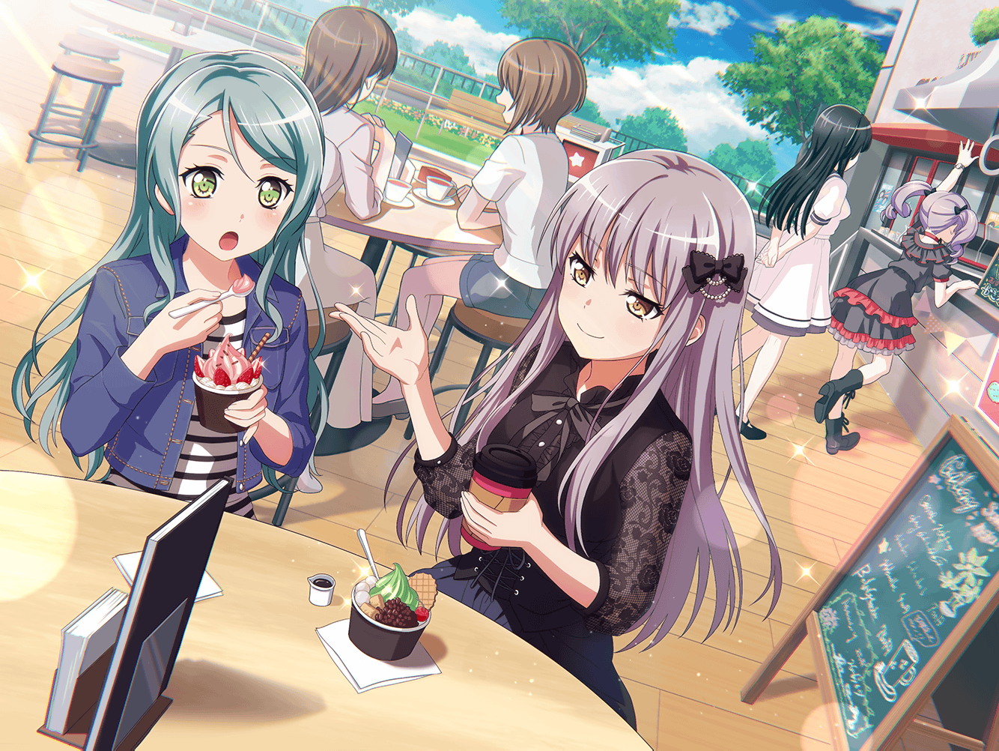

ファミリーレストラン
リサ
じゃーん！ みんな、この紙袋見てみて～！
あこ
わっ！ すごーい！ お菓子いっぱい入ってる～！
これ、店長さんにもらったの？
リサ
そうだよ～。思ったよりお店が忙しくてさー、
店長がお礼とお詫び兼ねていっぱいくれたんだ☆
みんな好きなの持ってって～
あこ
わーい！ どれにしようかなぁ～
ガムにキャンディにクッキーに……あとポテトチップスでしょ、
あっ、一口サイズのチョコもある！ 迷っちゃうな～
友希那
私は残った物でいいわ。
あなたたち、先に好きなものを選んで
あこ
やったー！ じゃあ、あこはポテトチップスにするー！
おねーちゃんと一緒に食べようっと。
りんりんはどうする？
燐子
わ、わたしは……この……チョコに……しようかな……
ゲームをするときに……手が汚れないから……
あこ
うんうん、戦略考えてるときとか、何か食べたくなるもんね～
燐子
うん……ホットミルクに……溶かして食べても……おいしいよ……
氷川さんは……どれにしますか……？
紗夜
そうね……
今井さん、２種類もらってもいいかしら？
リサ
いいよいいよ～
好きなだけ持っていっちゃって！
紗夜
では、私はガムとキャンディをいただくわ
あこ
あれ、紗夜さん、ガム好きなんですか？
紗夜
い、いえ、私が好きなわけじゃ……
日菜がガムを好きだから……
リサ
あはは、きっとヒナ喜ぶよ！
他は何が残ってるんだっけ？
紗夜
あとはクッキーが残っているわね
リサ
友希那、クッキーでいい？
友希那
リサがいらないのなら……
リサ
うん、アタシは大丈夫だよ。はい、どうぞ！
友希那
ありがとう
友希那
（本当は市販のクッキーよりも……）
リサ
ん？ どうかした？
友希那
……なんでもないわ
リサ
（なんかあんまり嬉しそうじゃないなぁ。
クッキー好きだから喜ぶかと思ったのに……）
リサ
友希那、やっぱり今日はアタシがクッキー食べたい気分だから
もらってもいい？
友希那
構わないわ。もともとリサがもらった物なんだし
リサ
ありがとー。代わりといったらなんだけど、
次の練習にクッキー作ってきたら食べる？
友希那
……あれば食べるわ
リサ
んじゃ、リクエスト受け付けちゃおっかな～
友希那はどういうの食べたい？ いつも作ってるのは
シンプルなやつだから、たまには違う味で作ってもいいよね～
友希那
違う味って……どんなの？
リサ
たとえば、紅茶風味にしてもいいし、チョコ入れてもいいし、
変化球で抹茶入れてもいいよね～
あこ
はいはーい！ あこはナッツ入りのがいいなー！
サクサク、カリカリ！ みたいな！
燐子
おいしそう……
紗夜
ちょっと宇田川さん、今井さんは湊さんに聞いていて……
リサ
あはは、あこのリクエストも聞くよ～
友希那
何を作るかは、リサにお任せするわ
リサ
えー、リクエストないの？
せっかく友希那の食べたいの作ろうと思ったのに……
友希那
リサのクッキーだったら、なんでもいいわ
……どれも好きだから
リサ
友希那……
リサ
（アタシのクッキーだったらなんでもいい、なんて
かわいいなぁ……
気合入れて作っちゃお☆）
リサ
おっけー！ じゃあ、いろんな味で作っちゃおうかな。
アタシ特製スペシャルクッキー、おったのしみに～！